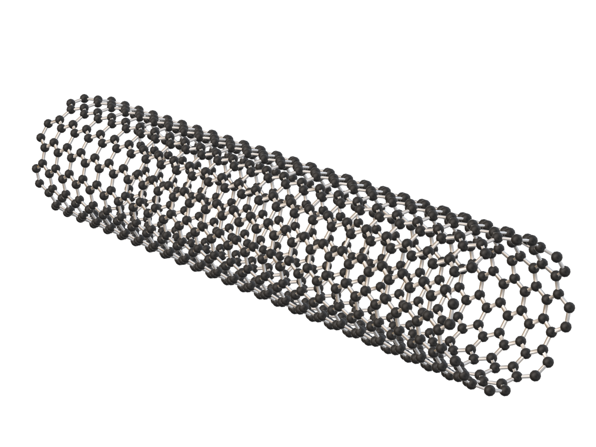
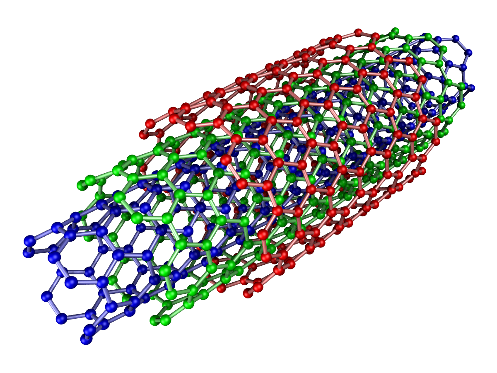

Abstract
This Article delves into the intersection of two cutting edge technologies – Nanotechnology and Artificial Intelligence (AI) – and their profound implications for reshaping the world as we know it. As Nanotech continues to revolutionise the physical realm, and AI rapidly furthering the intellectual capabilities of machines, their convergence opens previously impossible to solve challenges. From advancements in healthcare to the ethical considerations surrounding anatomy and decision-making, this exploration navigates the impact of Nanotech and AI on our society. Through a series of innovation, ethics, and societal adaptation, we unravel the intricate tapestry that these technologies weave, offering a glimpse into the journey that awaits us in the era of Nanotech and AI integration.
Introduction
Artificial intelligence (AI) and Nanotechnology are two of the most rapidly developing technologies in the world. AI is the ability of machines to simulate human intelligence, while nanotechnology is the manipulation of matter at the atomic and molecular level. These two technologies are already having a profound impact on our lives, and they are only going to become more important in the future.
Regarding Nanotechnology, Feynman once described a vision of using machines to build smaller machines down to the molecular level (Bayda et al., 2019). This idea if put into practice could allow us infinite ways to further the development of mankind in every sense from physical health to architecture.

AI has made monumental changes to the way we work especially in recent years. Especially with AI engines like ChatGPT and Google Bard, we’ve had to adapt to the risks involved with AI as openly available as it has become. Where students can, instead of writing up a 1000-word essay, have a bot do it for them in seconds. This gives examiners and teachers a much harder time with checking if a students work I truly their own.
Potential Uses
With AI, we’ve had to change the way we see and deal with it in our lives. With monumental changes to how we live, some people even using it as opposed to traditional search engines. Combine this power of an alternate mind working where we don’t have to, with the versatility of nanomachines, this would bring countless improvements to a vast range of applications. From targeted medication to countering climate change. When paired with Nanotechnology, this could potentially revolutionize almost every sector.
Climate Change
The battle against climate change necessitates innovative approaches to electricity generation and utilization, and nanotechnology has already emerged as a pivotal contributor. It has been instrumental in the development of batteries with enhanced energy storage capacities for electric vehicles and has empowered solar panels to more efficiently convert sunlight into electricity.
The common trick in both applications is to use nanotexturing or nanomaterials (Prodromakis, Reader in Nanoelectronics, 2022). This involves transforming a flat surface into a three-dimensional structure, significantly increasing the surface area. This expansion provides more room for the reactions responsible for energy storage or generation, enhancing the efficiency of the devices. This can be done by employing materials like nanowires and/or carbon nanotubes (White, Black plastic can't be recycled – but we've just found a way to use the carbon in renewable energy, 2023). The main issue with carbon however is that Exposure to carbon nanotubes has been linked to mesothelioma, a lung lining cancer. Inhaling nanotubes is thought to cause lung tissue scarring akin to asbestos fibres. This raises concerns as nanotubes are already present in various everyday items like bicycle frames, car bodies, and tennis rackets (Ren, Carbon nanotube 2023). Guoqiang highlights this as a main concern in terms of carbon nanotubes and potential poisoning is a main concern for the future of nanotechnology. The manufacture of nanomachines and other nanotechnologies would naturally be tedious with a high margin for error, this should be considered. The cost to make these machines would be extreme and even though they are extremely beneficial, it would be incredibly difficult at the current state of technology to reuse these machines.
Overall, nanomachines would allow us to use, store and gather energy as each machine would only use a minuscule amount of it more efficiently. Pairing it with the newfound breakthroughs in AI, we can create almost fully autonomous machines that can change their shape, size, and application in conjunction with countless others, making them extremely diverse.
Biomedical Applications
The Biomedical Field has always been quite tedious to understand but also difficult to incorporate machines and technology into anatomically. Mostly due to the human body’s immune system and its high tolerance to foreign bodies. This prevents most technologies from working in tandem with the body itself. “All implanted materials can be recognized by the patient's immune system as foreign bodies causing cellular and tissue immune responses” (Rabin, Immune response to implants and biomaterials 2022). As we can see from the words of Steven Rabin MD on Medscape, the human body outright rejects implants. Continuing, he emphasizes that an unfavourable immune response may result in adverse outcomes such as heightened inflammation, hindrance of healing, formation of fibrous encapsulation, and rejection of the implant; conversely, a favourable immune response can pave the way for the successful bio integration of the implant. This poses a serious threat to mankind when people have strong or sensitive immune systems but require biomedical treatment.
Carbon Nanotubes for example being a tube made of carbon with a diameter in the nanometre range (nanoscale). For biomedical applications, carbon nanotubes show promise as vehicles for targeted drug-delivery and nerve cell regeneration. Yet, their potential triumph in bio-related applications heavily depends on the ongoing early-stage toxicity study. (Ren, Carbon nanotube, 2023) Carbon is a highly dangerous substance that can potentially cause poisoning to people. Aside from this however, this technology and its applications, like in drug delivery and potentially cancer treatment, has the potential to be extremely pivotal and changing how we look at healthcare. Especially if we can get fully autonomous nanobots to navigate the body and blood vessels to find the correct destination for medication. Highly beneficial to the species.
 Final Summary
To summarise, there are more applications for Nanotechnology and AI but the two above I believe are the most researched and possibly the most important as of right now, maximising healthcare for mankind and maximising the longevity of the planet we call home. This gives us even greater success as a species and allows us to better the lives of all the people around us and future generations.
Bibliography
Bayda, S. et al. (2019) The history of nanoscience and nanotechnology: From chemical-physical applications to nanomedicine, Molecules (Basel, Switzerland)(Accessed: 04 December 2023)
Prodromakis, Reader in Nanoelectronics, T. (2022) Five Ways Nanotechnology is securing your future, The Conversation.(Accessed: 04 December 2023)
Ren, G. (2023) Carbon nanotube, Encyclopaedia Britannica (Accessed: 04 December 2023)
White, A.O. (2023) Black plastic can’t be recycled – but we’ve just found a way to use the carbon in renewable energy, The Conversation (Accessed: 04 December 2023)
Rabin, S.I. (2022) Immune response to implants and biomaterials Background, Immune Response to Metallic Implants, Immune Response to Non-metallic Implants (Accessed: 04 December 2023)